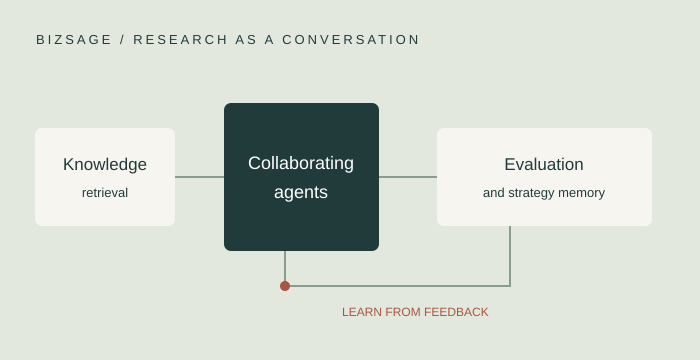
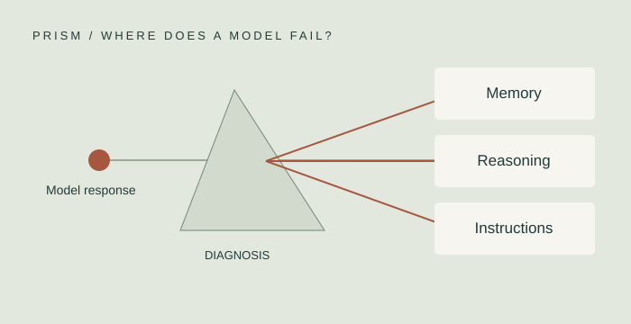
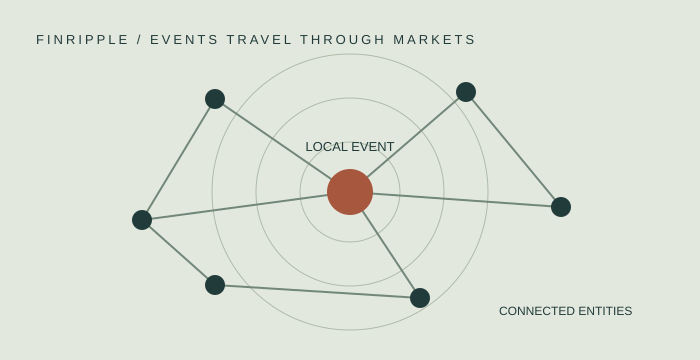

BizSage 与 Caught in the Story 预印本和代码公开，获 EMNLP 2026 Findings 接收。BizSage and Caught in the Story release preprints and code; accepted to EMNLP 2026 Findings. ↗
LEARNING · AGENTS · FINANCE
让智能，
理解真实世界的决策。Intelligence for
real-world decisions.
我们研究金融与经济中的智能方法：从大模型的学习与推理，到智能体的协作与决策，再到金融市场的建模与实证。研究由香港科技大学（广州）金融科技学域张光助理教授带领。We study intelligence in finance and economics—from how language models learn and reason, to how agents collaborate and decide, to modeling financial markets. Led by Guang Zhang at HKUST(GZ).
香港科技大学（广州） · 金融科技学域HKUST(GZ) · Financial Technology
FIG. 01 / CONNECTED INTELLIGENCE+ + +
在学习、决策与金融之间建立连接。Connecting learning, decisions, and finance.↗
最新动态Latest news
PRISM、BizCompass 与数据混合研究收入 ACL 2026 系列论文集。PRISM, BizCompass, and data-mixing research appear in the ACL 2026 proceedings. ↗
01 / RESEARCH
围绕重要的问题。Questions worth pursuing.
从模型的能力，到现实中的问题。From model capabilities to real-world questions.
01RESEARCH THEME
大模型：学习与推理Learning & reasoning
研究训练数据的选择与混合，评估大模型在商业任务中的推理能力，并诊断记忆、推理与指令遵循中的失误。Studying training-data selection and mixing, evaluating business reasoning, and diagnosing failures in memory, reasoning, and instruction following.
02RESEARCH THEME
智能体：协作与决策Agents & decisions
探索知识驱动的多智能体研究流程，以及语言模型在多轮交互、社会情境与经济决策中的行为。Exploring knowledge-grounded multi-agent research and language-model behavior in multi-turn interactions, social settings, and economic decisions.
03RESEARCH THEME
金融：数据与模型Markets & models
结合金融计量、随机过程与机器学习，研究金融时间序列、市场事件的传播及实证金融问题。Combining financial econometrics, stochastic processes, and machine learning to study time series, market-event propagation, and empirical finance.
02 / SELECTED WORK
让想法，成为可见的探索。Ideas, made tangible.
以代表项目连接科学问题、技术方法与研究成果。Connect scientific questions, methods, and findings through selected projects.



03 / PUBLICATIONS
研究成果。Published work.
论文、预印本与开放研究资源。Papers, preprints, and open research resources.
2026
Computational Economics
Jump Detection Using Deep Learning: With Applications to Financial Time Series Data
Weizheng Chen, Guang Zhang
2025 年在线发表；2026 年卷期。Published online in 2025; assigned to the 2026 volume.
BibTeX
@article{zhang2025_40887,
title = {Jump Detection Using Deep Learning: With Applications to Financial Time Series Data},
author = {Weizheng Chen and Guang Zhang},
year = {2026},
journal = {Computational Economics},
doi = {10.1007/s10614-025-10949-6}
}2026
Applied Economics Letters
How to facilitate in-depth digitalization in enterprises?
Junwei Wu, Cunyi Yang, Guang Zhang
2024 年在线发表；2026 年卷期。Published online in 2024; assigned to the 2026 volume.
BibTeX
@article{zhang2024_40888,
title = {How to facilitate in-depth digitalization in enterprises?},
author = {Junwei Wu and Cunyi Yang and Guang Zhang},
year = {2026},
journal = {Applied Economics Letters},
doi = {10.1080/13504851.2024.2398191}
}2026
EMNLP 2026 · Findings
BizSage: A Self-Evolving Multi-Agent Framework for Business Research with Efficient Knowledge Retrieval
Yuhe Wu, Guangyu Wang, Jiaxin Liu, Guang Zhang
已接收；预印本与代码已公开。Accepted; preprint and code available.
BibTeX
@misc{bizsage2026,
title = {BizSage: A Self-Evolving Multi-Agent Framework for Business Research with Efficient Knowledge Retrieval},
author = {Yuhe Wu and Guangyu Wang and Jiaxin Liu and Guang Zhang},
year = {2026},
note = {EMNLP 2026 · Findings},
url = {https://arxiv.org/abs/2609.22235}
}2026
EMNLP 2026 · Findings
Caught in the Story: Narrative Captivity in Multi-turn LLMs Conversation
Yuhe Wu, Guangyu Wang, Yujie Chen, Jiatong Zhang, Yuran Chen, Yutong Zhang, Xiyin Cheng, Wenpeng Cao, Zhuang Liu, Guang Zhang
已接收；预印本与代码已公开。Accepted; preprint and code available.
BibTeX
@misc{cis2026,
title = {Caught in the Story: Narrative Captivity in Multi-turn LLMs Conversation},
author = {Yuhe Wu and Guangyu Wang and Yujie Chen and Jiatong Zhang and Yuran Chen and Yutong Zhang and Xiyin Cheng and Wenpeng Cao and Zhuang Liu and Guang Zhang},
year = {2026},
note = {EMNLP 2026 · Findings},
url = {https://arxiv.org/abs/2609.03407}
}2026
ICML 2026 · Spotlight
Towards Efficient LLMs Annealing with Principled Sample Selection
Yuanjian Xu, Jianing Hao, Wanbo Zhang, Zhong Li, Guang Zhang
会议信息据作者公开仓库。Conference details from the authors’ public release.
BibTeX
@inproceedings{direct2026,
title = {Towards Efficient LLMs Annealing with Principled Sample Selection},
author = {Yuanjian Xu and Jianing Hao and Wanbo Zhang and Zhong Li and Guang Zhang},
year = {2026},
booktitle = {ICML 2026 · Spotlight},
url = {https://github.com/xuyj233/Direct}
}2026
ACL 2026 · Main (Long Papers)
PRISM: Probing Reasoning, Instruction, and Source Memory in LLM Hallucinations
Yuhe Wu, Guangyu Wang, Yuran Chen, Jiatong Zhang, Yutong Zhang, Yujie Chen, Jiaming Shang, Guang Zhang, Zhuang Liu
BibTeX
@inproceedings{prism2026,
title = {PRISM: Probing Reasoning, Instruction, and Source Memory in LLM Hallucinations},
author = {Yuhe Wu and Guangyu Wang and Yuran Chen and Jiatong Zhang and Yutong Zhang and Yujie Chen and Jiaming Shang and Guang Zhang and Zhuang Liu},
year = {2026},
booktitle = {ACL 2026 · Main (Long Papers)},
url = {https://github.com/Kzczc/ACL2026-PRISM}
}2026
ACL 2026 · Findings
BizCompass: Benchmarking the Reasoning Capabilities of LLMs in Business Knowledge and Applications
Jianing Hao, Yuhe Wu, Yuanjian Xu, Shichang Meng, Shuai Yuan, Wei Zeng, Zixuan Wang, Guang Zhang
BibTeX
@inproceedings{bizcompass2026,
title = {BizCompass: Benchmarking the Reasoning Capabilities of LLMs in Business Knowledge and Applications},
author = {Jianing Hao and Yuhe Wu and Yuanjian Xu and Shichang Meng and Shuai Yuan and Wei Zeng and Zixuan Wang and Guang Zhang},
year = {2026},
booktitle = {ACL 2026 · Findings},
url = {https://github.com/CatherineHao/BizCompass}
}2026
ACL 2026 · Main (Short Papers)
Rethinking Data Mixing from the Perspective of Large Language Models
Yuanjian Xu, Tianze Sun, Changwei Xu, XinLong Zhao, Jianing Hao, Ran Chen, Yang Liu, Ruijie Xu, Stephen Chen, Guang Zhang
BibTeX
@inproceedings{mixing2026,
title = {Rethinking Data Mixing from the Perspective of Large Language Models},
author = {Yuanjian Xu and Tianze Sun and Changwei Xu and XinLong Zhao and Jianing Hao and Ran Chen and Yang Liu and Ruijie Xu and Stephen Chen and Guang Zhang},
year = {2026},
booktitle = {ACL 2026 · Main (Short Papers)},
url = {https://aclanthology.org/2026.acl-short.28/}
}2026
ICASSP 2026
HGAN-SDEs: Learning Neural Stochastic Differential Equations with Hermite-Guided Adversarial Training
Yuanjian Xu, Jianing Hao, Shuai Yuan, Guang Zhang
BibTeX
@inproceedings{hgan2026,
title = {HGAN-SDEs: Learning Neural Stochastic Differential Equations with Hermite-Guided Adversarial Training},
author = {Yuanjian Xu and Jianing Hao and Shuai Yuan and Guang Zhang},
year = {2026},
booktitle = {ICASSP 2026},
url = {https://github.com/xuyj233/HGAN-SDE}
}2025
ACM International Conference on AI in Finance (ICAIF)
LENS: Large Pre-trained Transformer for Exploring Financial Time Series Regularities
Yuanjian Xu, Jianing Hao, Anxian Liu, Zhenzhuo Li, Shichang Meng, Shuai Yuan, Guang Zhang
BibTeX
@inproceedings{zhang2025_492494,
title = {LENS: Large Pre-trained Transformer for Exploring Financial Time Series Regularities},
author = {Yuanjian Xu and Jianing Hao and Anxian Liu and Zhenzhuo Li and Shichang Meng and Shuai Yuan and Guang Zhang},
year = {2025},
booktitle = {ACM International Conference on AI in Finance (ICAIF)},
doi = {10.1145/3768292.3770349}
}2025
Pacific-Basin Finance Journal
The response of firm performance to female official leadership
Zihao Qu, Guang Zhang
BibTeX
@article{zhang2025_492495,
title = {The response of firm performance to female official leadership},
author = {Zihao Qu and Guang Zhang},
year = {2025},
journal = {Pacific-Basin Finance Journal},
doi = {10.1016/j.pacfin.2025.102933}
}2025
IEEE TVCG
FinFlier: Automating Graphical Overlays for Financial Visualizations With Knowledge-Grounding Large Language Model
Jianing Hao, Manling Yang, Qing Shi, Yuzhe Jiang, Guang Zhang, Wei Zeng
2024 年在线发表；2025 年正式卷期。Online in 2024; assigned to the 2025 volume.
BibTeX
@article{finflier2025,
title = {FinFlier: Automating Graphical Overlays for Financial Visualizations With Knowledge-Grounding Large Language Model},
author = {Jianing Hao and Manling Yang and Qing Shi and Yuzhe Jiang and Guang Zhang and Wei Zeng},
year = {2025},
journal = {IEEE TVCG},
url = {https://github.com/CatherineHao/FinFlier}
}2025
ACL 2025 · Findings
FinRipple: Aligning Large Language Models with Financial Market for Event Ripple Effect Awareness
Yuanjian Xu, Jianing Hao, Kunsheng Tang, Jingnan Chen, Anxian Liu, Peng Liu, Guang Zhang
BibTeX
@inproceedings{finripple2025,
title = {FinRipple: Aligning Large Language Models with Financial Market for Event Ripple Effect Awareness},
author = {Yuanjian Xu and Jianing Hao and Kunsheng Tang and Jingnan Chen and Anxian Liu and Peng Liu and Guang Zhang},
year = {2025},
booktitle = {ACL 2025 · Findings},
url = {https://aclanthology.org/2025.findings-acl.489/}
}2022
Energies
COVID-19 Effects on Arbitrage Trading in the Energy Market
Li Chen, Guang Zhang
BibTeX
@article{zhang2022_40889,
title = {COVID-19 Effects on Arbitrage Trading in the Energy Market},
author = {Li Chen and Guang Zhang},
year = {2022},
journal = {Energies},
doi = {10.3390/en15134584}
}2021
Quantitative Finance
Pairs trading with general state space models
Guang Zhang
BibTeX
@article{zhang2021pairs,
title = {Pairs trading with general state space models},
author = {Zhang, Guang},
journal = {Quantitative Finance},
year = {2021},
doi = {10.1080/14697688.2021.1890806}
}04 / PEOPLE
研究背后，是人。People behind the questions.
不同的视角，让探索更加丰富。Different perspectives make discovery possible.

PRINCIPAL INVESTIGATOR
张光Guang Zhang
助理教授 · 金融科技学域Assistant Professor · Financial Technology
张光博士任香港科技大学（广州）社会枢纽金融科技学域助理教授，2021 年 5 月获波士顿大学经济学博士学位。研究兴趣包括金融科技、金融计量经济学、机器学习与实证金融。Guang Zhang is an Assistant Professor in the Financial Technology Thrust, Society Hub, at HKUST(GZ). He received his Ph.D. in Economics from Boston University in May 2021. His research interests include FinTech, financial econometrics, machine learning, and empirical finance.
博士生Doctoral students 7
2026-2029
Jiaxin Liu
主要指导Primary supervision
2026-2030
Yuhe Wu
主要指导Primary supervision
2025-2029
Yuqiu Deng
主要指导Primary supervision
2023-2027
Wei Li
主要指导Primary supervision
2023-2027
Yuanjian Xu
主要指导Primary supervision
2025-2028
Junying Ma
联合指导Co-supervised
2022-2026
Hoalm Yu
联合指导Co-supervised
硕士生Master’s students 1
2025-2027
Hanzhi Xiao
主要指导Primary supervision
毕业生与培养记录Graduates & completed degrees 22
按已完成学位列示；其中 Jiaxin Liu、Junying Ma 现继续攻读博士。Listed by completed degree; Jiaxin Liu and Junying Ma are also current doctoral students.
博士毕业生Doctoral graduates
Weizheng Chen
2022-2026 · 主要指导Primary supervision
Fuyao University of Science and Technology
Jianing Hao
2022-2026 · 联合指导Co-supervised
Ant Financial
硕士毕业生Master’s graduates
Yixin He
2024-2026 · 主要指导Primary supervision
Project Management Position, Contemporary Amperex Technology Co., Limited
Yuxuan Li
2024-2026 · 主要指导Primary supervision
Management Trainee, Bank of Guangzhou
Jiaxin Liu
2024-2026 · 主要指导Primary supervision
PhD in FinTech, HKUST(GZ)
Minghui Xu
2024-2026 · 主要指导Primary supervision
Channel Manager，Bosera Funds
Jingnan Chen
2023-2025 · 主要指导Primary supervision
Weijie Zhao
2023-2025 · 主要指导Primary supervision
CITIC Securities
Zihao Qu
2023-2025 · 主要指导Primary supervision
PhD in IPE, HKUST(GZ)
Yuxin Hao
2023-2025 · 主要指导Primary supervision
ByteDance
Anxian Liu
2023-2025 · 主要指导Primary supervision
PhD in AI, HKUST(GZ)
Junying Ma
2023-2025 · 主要指导Primary supervision
PhD in INTR, HKUST(GZ)
Xiyue Zhou
2023-2025 · 主要指导Primary supervision
PhD in Finance, UNSW
Peng Liu
2022-2024 · 主要指导Primary supervision
PhD in Finance, Shanghai University of Finance and Economics
Yi Zhou
2022-2024 · 主要指导Primary supervision
Yan Gao
2022-2024 · 主要指导Primary supervision
Siling Wang
2022-2024 · 主要指导Primary supervision
Wen Zhou
2022-2024 · 主要指导Primary supervision
L’Oréal
Wenjing Xu
2022-2024 · 主要指导Primary supervision
PhD, University of Amsterdam
Tianyi Chen
2022-2024 · 主要指导Primary supervision
PhD, Nankai University
Mingda Shi
2022-2024 · 主要指导Primary supervision
Han Lin
2022-2024 · 主要指导Primary supervision
学生与校友信息根据团队提供的培养名单整理。Student and alumni records are based on the roster provided by the group.
05 / JOIN & CONNECT
下一个问题，期待一起探索。The next question starts with us.
对大模型、智能体、金融计量或经济决策感兴趣？欢迎通过公开邮箱与我们交流研究想法。Interested in language models, agents, financial econometrics, or economic decisions? Get in touch to discuss research ideas.
联系实验室Contact the lab ↗香港科技大学（广州） · W1 L5 509HKUST(GZ) · W1 L5 509